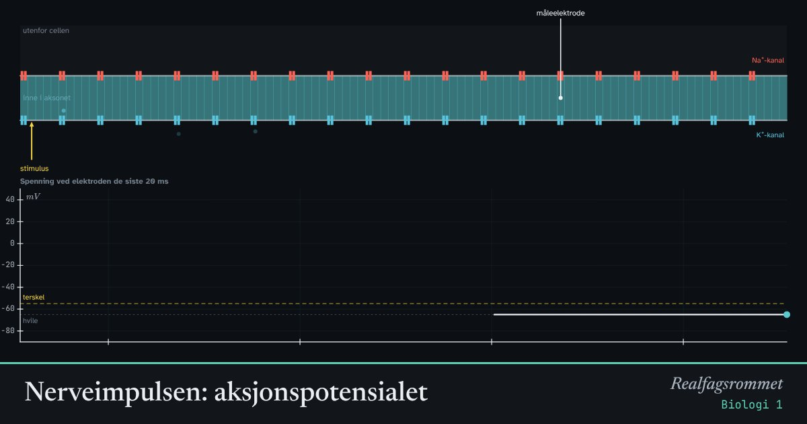

Nerveimpulsen: aksjonspotensialet
En nerveimpuls er en bølge av spenningsendring langs aksonet. Natriumkanaler åpner seg, Na⁺ strømmer inn, og innsiden blir positiv. Så åpner kaliumkanalene seg, K⁺ strømmer ut, og spenningen faller tilbake.
Start animasjonen
Formler
Om animasjonen
Simuleringen bruker Hodgkin–Huxley-modellen, som forklarer nerveimpulsen ut fra hvordan ionekanalene åpner og lukker seg. Fargen på aksonet viser spenningen: blått er hvile (−65 mV), rødt er positivt.
Et svakt stimulus gir bare en liten spenningsendring som dør ut. Når spenningen passerer terskelen (omtrent −55 mV), åpner natriumkanalene seg og forsterker hverandre. Da kommer en full impuls. Dette kalles alt-eller-ingenting.
Etter en impuls er natriumkanalene stengt en kort stund. Denne refraktærperioden gjør at impulsen bare går én vei.
I et myelinisert akson isolerer myelinskjeden aksonet, og impulsen hopper fra node til node (Ranviers innsnøringer). Det går raskere enn i et akson uten myelin.
Prøv dette
- Finn det svakeste stimuluset som gir en full nerveimpuls.
- Les av grafen: hva er den høyeste spenningen under impulsen? Hvorfor kommer den ikke helt opp til +50 mV?
- Slå på myelin og sammenlign tiden impulsen bruker fram til elektroden.
- Gi to stimuli rett etter hverandre. Hvorfor blir det ikke to impulser?
Kompetansemål
- Biologi 1: Livsprosesser, anatomi og fysiologi
- Biologi 1: Kommunikasjon mellom celler: nerver og hormoner